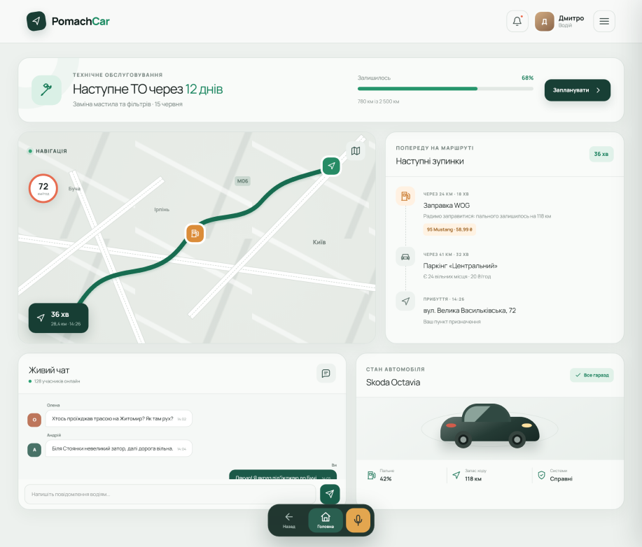

PomichCar - застосунок, який допомагає водіям стежити за автомобілем, контролювати витрати та планувати поїздки.
Дізнатися більше →
Водіям доводиться окремо стежити за витратами, ремонтами, технічним обслуговуванням та маршрутами. Через це легко забути про важливі справи.
Нагадування про заміну мастила, фільтрів та інші процедури.
Планування маршрутів та пошук потрібних зупинок у дорозі.
Контроль витрат на пальне, ремонт та автомобільні запчастини.
Історія обслуговування та інформація про стан автомобіля.
Можливість ділитися досвідом та отримувати корисні поради.
Корисна інформація для початківців та досвідчених водіїв.
PomichCar об'єднує корисні інструменти для водіїв в одному зручному застосунку.
Долучитися до проєкту →Залиш свої контактні дані, щоб дізнатися більше про проєкт.
Демонстраційна форма прототипу.